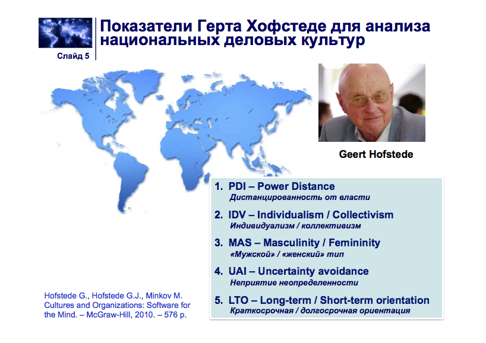

Перподаватель: Садовский Леонид Игоревич (ИБМ 6)
Список требований:
- Посещения. Пропустить можно 3 занятия;
- Итог каждой темы - рубежный контроль. РК надо посещать. Кто не пришел и не написал, те его отрабатывают, но в четырехкратном размере (необходимо решить по 4 варианта). На РК можно пользоваться всем.
- Максимальное время опоздание - 5 мин;
Лекция 1
2 сентября 2015
Национальные модели бизнеса в условиях глобализации
Первая задача в отношениях - уважение и знание специфик зарубежных (и не только) партнеров по делу.
Модели можно поделить на 4 области:
- Американская
- Европейская
- Восточноазиатская
- Ближневосточная
Американская модель бизнеса
Основана на системе моральных ценностей, в которой личность является самоцелью развития бизнеса и общества. Принципы демократии обеспечивают защиту индивидуальных интересов и возможности. Главной целью является прибыль, а движущей силой - конкуренция.
"Что выгодно Форду, то выгодно Америке". Генри Форд
Движущий лозунг:
"Каждый может проснуться богатым и знаменитым"
Европейская модель бизнеса
Основана на протестантской этике и принципах корпоративности, которые обеспечивают интересы широких кругов лиц и достижения консенсуса.
Отличительная черта - социальная ответственность бизнеса.
Бизнес должен договариваться с обществом и государством, обеспечить себе социальную поддержку.
Конкуренция - система гаранитий равных возможностей.
Ближневосточная модель бизнеса
Закрытая модель бизнеса. По своему фундаментальному признаку противоречит западной. Основывается на религии и взаимоотношений между людьми.
Восточноазиатская модель бизнеса
Характеризуется непрдесказуемостью и резким экономическим подъемом в последнее время.
Лекция 2
9 сентября 2015
Показатели Герта Хофстеде для анализа национальных деловых культур
Герт Хофстеде родился в Голландии в 1928г.Один из первый начала заниматься вопросами социологии. В его работах выявлена попытка выявить ключевые факторы в развитиях национальных культур. Свои разработки начал производить в начале 60-ых годов. Его работы: "Последствия культуры", "Измерение национальных культур в пятидесяти странах и трех регионах".
Герт Хофстеде стремился понять специфику отношений в транснациональных компаниях, которые хотят взаимодействовать с различными регионами. Примерами такой компании является IBM. Для этого использовал опрос, с выборкой в 116 000 человек. Придумал методику перевода из 5-бальной шкалы в 100-бальную. Формула, по которой он это делал:
Ответы оценивались по 5-бальной шкале. Затем вычислялась средняя оценка. На основе средней величины, вычислялся свой индекс. Из средней величины вычиталось 3. Полученный результат умножался на 25. К нему прибавлялось число 50.
(СВ - 3)·25 + 50
Данные по СССР измерялась на основе косвенных измерений.
Следующие 5 индексов для оценки региона:
PDI - дистанцированность от власти. Как население воспринимает власть, какой степени население с меньшей властью относятся к населению с большей властью. Для культур с большой дистанцированностью от власти (Латинская Америка, Арабские страны, Россия) характерно восприятие власти как наиболее важной частью жизни, преклонение перед властью. Для стран с меньшей дистанцированностью (Австрия, Дания) характерно построение отношения на основах равенства и уважения личности.
IDV - обособленность (коллективизм). Тяготение к личностным целям, осознание себя как "я".
MAS - мужской или женский тип. Отражает уровень напористости в бизнесе, достижение результата любой ценой (мужской тип) - Японии, Мексика, Филиппины. Характерны качества: соперничество, уверенность в себе. Женский тип - Дания, Швеция. Забота о качестве жизни.
UAU - непринятие неопределенности. Степень восприятия и реагирования на определенные ситуации. Для стран с высоким индексом - следование традициям, непринятие разногласий. Наоборот - проявление инициативы, принятие разногласий.
LTO - кароткосрочная/долгосрочная ориентация. Характеризует ориентацию на принятие решений. Желание заглядывать в будущее. Больший индекс - юго-восточная Азия. Малый индекс: Европа - выполнение социальных обязательств.
Китай - хитрая страна, незаметно подмяла под себя весь мир.

Рассмотрим Германию, Россию и Китай.
Германия
Германия является децентрализованным обществом с мощным средним классом. Типовым методом принятия решения является собрание и совещание. Немецкое общество является умеренно индивидуалистическим. Отношения в бизнесе устанавливаются на основе личных качествах партнера и его способностях. Указать на ошибки другого - дать шанс исправиться. Лучше горькая, но правда. Очень ценится высокая производительности в бизнесе. Люди живут, чтобы работать. Статус демонстрируется автомобилями, часами. Немецкое общество стремится устранить неопределенности. Приоритеты отдаются дедуктивным методам (от частного к общему). В бизнес проекте любая деталь имеет важное значение. Единственный способ устранить неопределенность - положиться на свои знания и навыки. Краткосрочная ориентация в деловой культуре. Стремление получить результат как можно быстрее.
Китай
Общество принимает неравноправие между людьми. Защита от начальства практически отсутсвует. Китай является коллективистским обществом. Работа на интересы группы. Член группы получает приоритет по сравнению с другими людьми. Студенты крайне ответственно относятся к оценкам в учебе. Не смотря на наличие законов, правил и традиций, действуют гибко, быстро адаптируются и действуют крайне предприимчиво. Стратегический образ мышления. Готовы ждать очень долго требуемого результата.
Россия
Является очень централизованной. Большое расслоение властных структур. Поведение должно отражать статус. Сильная вертикаль власти. Низкий уровень индивидуализма. Личные связи нужны для получения информации, установления контактов. Прежде чем приступить к бизнесу, необходимо выстроить личные взаимоотношения. Работают, чтобы жить. В России создана одна из самых сложных бюрократий в мире. Подготовка к проведению презентации избыточно подробно, особенно при отчете перед начальством. Длительные планерки и заседания. Жизнь одним днем.
Лекция 3
16 сентября 2015
Шкала Чарлза Хемпден-Тернера и Фонса Тромпенара
Мир можно поделить на три формы "основ" в зависимости от страны проживания
Россия только начала отрабатывать новые моральные ценности и поведением. Однако, Россия имеет свой ярко выраженный архетип: насильственное навязывание американской культуры. Отличительные черты российского этноса:
- Социоцентризм. Если европеец способен к обращению к себе, то россиянин не способен к этому, за исключением крайних ситуаций (пример: обращение к врачу, оттягивая до последнего);
- "Зов империи". Преобладание ценностно-рациональных установок над целе-рациональными. Реализация идей, выступающих как "сверхценность" выступает как более привлекательная чем прагматичные идеи.
- "Московский"/"Новгородский" стереотип поведения. Связан с экстраординарными обстоятельствами, проявляющийся в бунте.
В итоге — сложный симбиоз российского капитализма.
Мировые экономические и финансовые системы, информационные системы будут менять культурные ценности и стремится их усреднению. Эта теория не подтвердилась. Выяснилось, что корпорации наоборот изменяют систему управления, максимально подстраиваясь под другую культуру.
Модели развития экономики в условиях глобализации
В современной глобальной системе 3 основных модели развития:
- Сырьевая модель развития
- Технологическая модель развития
- Инновационная модель развития
Сырьевая модель развития
Южная Америка, Северная Африка, Россия
Характерная для стран, обладающих большим запасом ресурсов.
Экономика стран ориентирована на добычу обработку и экспорт сырья. На вырученные средства производится импорт наукоемкой продукции.
Уровень ОАЭ сильно изменился за 20 лет, поменялся на технологическую (ВВП 9% от экспорта нефти).
Технологическая модель развития
Япония, Южная Корея, Китай
Предполагает производство высокотехнологичной продукции и дальнейшая поставка их на рынок.
Для развития технологической ориентированной экономики необходимо высоко квалифицированная рабочая сила, для чего нужна сильное техническое образование.
Инновационная модель развития
Европа, США
Фокусируется не только на распространение технических моделей, но и на разработку наукоемких моделей. Разработка и внедрение фундаментальных научно-исследовательских работ.
Формирование такого типа экономики, где наука и образование экономики является государственным приоритетом. США, Германия, Франция, Япония, Южная Корея лидируют в этом плане.
Сопоставление национальных моделей бизнеса и моделей развития экономики
Лекция 6
7 октября 2015
Артель
Деятельность основана ни их трудовом участии. Исполнительные органы: - Правление - Председатель
Унитарное предприятие
Коммерческая организация не наделенная правом собственности на закрепленное за ней имущество. В форме унитарных предприятий могут быть созданы только государственные и муниципальные мероприятия. Создание такого предприятия осуществляется уполномоченным органом.
Органы управления в акционерных обществах и обществах с ограниченной ответственностью
Общее собрание акционеров
- Изменение уставного капитала общества
- Избрание членов советов директоров, досрочное прекращение их полномочий
- Избрание уставных органов и их досрочное прекращение
- Решение о реорганизации и ликвидации общества
Если число акционеров > 50, то совет директоров обязан существовать. Иначе, функция совета директоров выполняется общим собранием акционеров. В состав совета директоров наряду с акционерами могут входить кредиторы АО, наемные лица.
Наблюдательный совет общества осуществляет наблюдательные и контрольные функции.
Исполнительный орган общества может быть коллегиальным в виде дирекции или единоличным. Подотчетен совету директоров и совету акционеров. Собрания акционеров могут быть переданы по договору другой организации.
Число участников ООО не должно превышать 50 человек (по законодательству). Если число превышает это число, то тогда общество должно преобразоваться в публичное акционерное общество или производственный кооператив.
Размер уставного капитала АО должен быть не может менее 100x величины МРОТ (который сейчас 100₽).
Классификация некоммерческих организаций и хозяйствующих субъектов без образования юридического лица
Может создаваться для самых разных ситуаций, направленных на достижение общественных благ.
Государственная корпорация
Признается не имеющая членства некоммерческая организация на основе имущественного взноса для социальных, управленческих и иных (например Ростех, Роскосмос, Росатом)
Потребительский кооператив
На основе членства на основе паевых взносов, для удовлетворения материальных или иных потребностей.
Общественные или религиозные объединения
Объединение для удовлетворения духовных и нематериальных потребностей
Фонд
Не имеющие членства, некоммерческие организации преследующие образовательные, культурные или другие общественно полезные действия. Фонд оперируют имуществом фондообразователей. Фонд вправе заниматься предпринимательской деятельностью, необходимой для достижения общественно-полезных целей.
Ассоциации и союзы
Создаются коммерческими организациями в целях координации своей предпринимательской деятельности, а так же представления и защиты управляющей функции. Если по решению участников возлагается ведение предпринимательской деятельности, то оно преобразуется в товарищество или хозяйственное общество.
Певый инвестиционный фонд
Не является юридическом лицом. Владельцы несут риск убытков, связанных с изменением рыночной стоимости имущества, составляющих инвестиционный фонд.
Простое товарищество
Цель - объединение для извлечения прибыли. Товарищи имеют право на ведение общих дел, получение прибыли пропорционально внесенных вкладов, как и несение убытков.
Представительство
Представляет интересы юридического лица и осуществляет его защиту. Не является юридическим лицом.
Филиал
Обособленное подразделения юридического лица вне места его нахождения и представляющий это лицо. Не является юридическим лицом. Отличия от представительства: осуществляет функции юридического лица. Может иметь индивидуальное наименование.